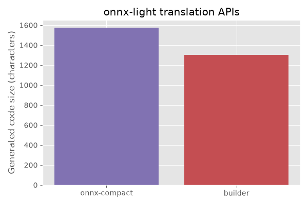

Note
Go to the end to download the full example code.
Translating ONNX models to source code#
onnx_light.tools.translate() converts an ONNX model into source code
that rebuilds it. The native implementation supports a compact
onnx_light.onnx.helper expression and an incremental GraphBuilder
script.
import numpy as np
import onnx_light.onnx as onnx
import onnx_light.onnx.helper as oh
import onnx_light.onnx.numpy_helper as onh
from onnx_light.tools import translate, translate_header
model = oh.make_model(
oh.make_graph(
[oh.make_node("Gemm", ["X", "W", "b"], ["T"]), oh.make_node("Relu", ["T"], ["Z"])],
"gemm_relu",
[oh.make_tensor_value_info("X", onnx.TensorProto.FLOAT, [None, 8])],
[oh.make_tensor_value_info("Z", onnx.TensorProto.FLOAT, [None, 5])],
[
onh.from_array(np.random.randn(8, 5).astype(np.float32), name="W"),
onh.from_array(np.random.randn(5).astype(np.float32), name="b"),
],
),
opset_imports=[oh.make_opsetid("", 17)],
ir_version=9,
)
Compact helper expression#
code_compact = translate(model, api="onnx-compact")
print(code_compact)
model = oh.make_model(
oh.make_graph(
[
oh.make_node('Gemm', ['X', 'W', 'b'], ['T']),
oh.make_node('Relu', ['T'], ['Z']),
],
'gemm_relu',
[
oh.make_tensor_value_info('X', onnx.TensorProto.FLOAT, (None, 8)),
],
[
oh.make_tensor_value_info('Z', onnx.TensorProto.FLOAT, (None, 5)),
],
[
onh.from_array(np.array([[1.7933183908462524, 0.1599542200565338, -0.018211238086223602, 0.4687612056732178, -0.06996996700763702], [-0.20952315628528595, 0.24389097094535828, 0.3215225636959076, -1.9314565658569336, -0.2129099816083908], [1.6602528095245361, 1.3685986995697021, 0.001661198795773089, 0.12126868963241577, -0.527466356754303], [-1.4472512006759644, 0.4820227026939392, 0.707349419593811, -0.8221206068992615, -0.17074978351593018], [-1.1701850891113281, -0.07480404525995255, 3.2690882682800293, 0.011048520915210247, -0.38631197810173035], [-0.003311985172331333, -1.3943760395050049, 0.9038352966308594, 0.07667233794927597, 1.4130244255065918], [0.5171977877616882, -1.2684743404388428, -0.6706350445747375, 0.20692867040634155, -0.61497563123703], [-0.33913302421569824, 1.6595067977905273, -0.07696742564439774, -0.14445766806602478, -0.7233589291572571]], dtype=np.float32), name='W'),
onh.from_array(np.array([-0.7196519374847412, 0.7727372050285339, -1.0028917789459229, 1.4334123134613037, -2.1447410583496094], dtype=np.float32), name='b'),
],
),
opset_imports=[oh.make_opsetid('', 17)],
ir_version=9,
)
Native GraphBuilder script#
code_builder = translate(model, api="builder")
print(code_builder)
g = GraphBuilder('gemm_relu')
g.set_opset_version('', 17)
g.inp('X', onnx.TensorProto.FLOAT, (None, 8))
g.init(np.array([[1.7933183908462524, 0.1599542200565338, -0.018211238086223602, 0.4687612056732178, -0.06996996700763702], [-0.20952315628528595, 0.24389097094535828, 0.3215225636959076, -1.9314565658569336, -0.2129099816083908], [1.6602528095245361, 1.3685986995697021, 0.001661198795773089, 0.12126868963241577, -0.527466356754303], [-1.4472512006759644, 0.4820227026939392, 0.707349419593811, -0.8221206068992615, -0.17074978351593018], [-1.1701850891113281, -0.07480404525995255, 3.2690882682800293, 0.011048520915210247, -0.38631197810173035], [-0.003311985172331333, -1.3943760395050049, 0.9038352966308594, 0.07667233794927597, 1.4130244255065918], [0.5171977877616882, -1.2684743404388428, -0.6706350445747375, 0.20692867040634155, -0.61497563123703], [-0.33913302421569824, 1.6595067977905273, -0.07696742564439774, -0.14445766806602478, -0.7233589291572571]], dtype=np.float32), name='W')
g.init(np.array([-0.7196519374847412, 0.7727372050285339, -1.0028917789459229, 1.4334123134613037, -2.1447410583496094], dtype=np.float32), name='b')
g.op.Gemm('X', 'W', 'b', outputs=['T'])
g.op.Relu('T', outputs=['Z'])
g.out('Z', onnx.TensorProto.FLOAT, (None, 5))
model = g.to_onnx(ir_version=9)
Round-trip verification#
namespace = {}
exec(
compile(translate_header("onnx-compact") + code_compact, "<translate>", "exec"), namespace
) # noqa: S102
recreated = namespace["model"]
assert [node.op_type for node in recreated.graph.node] == [
node.op_type for node in model.graph.node
]
Compare generated source sizes#
import matplotlib.pyplot as plt # noqa: E402
labels = ["onnx-compact", "builder"]
sizes = [len(code_compact), len(code_builder)]
fig, ax = plt.subplots(figsize=(6, 4))
ax.bar(labels, sizes, color=["#8172b2", "#c44e52"])
ax.set_ylabel("Generated code size (characters)")
ax.set_title("onnx-light translation APIs")
plt.tight_layout()
plt.show()

Total running time of the script: (0 minutes 0.062 seconds)
Related examples